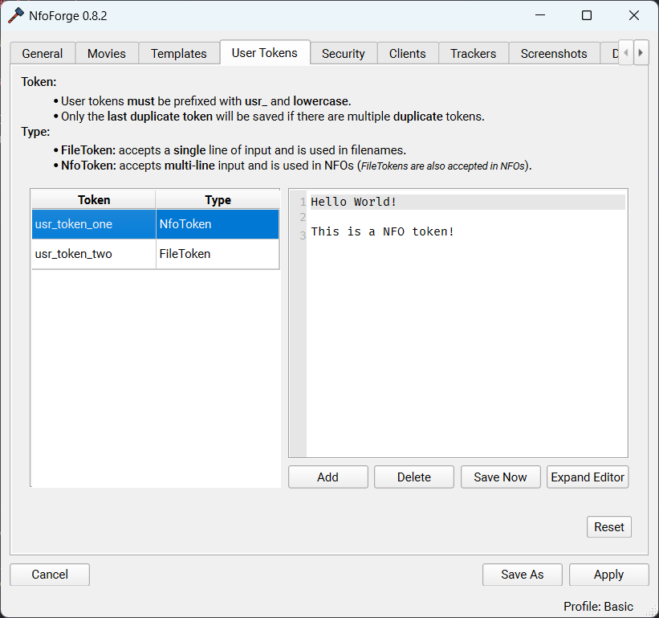
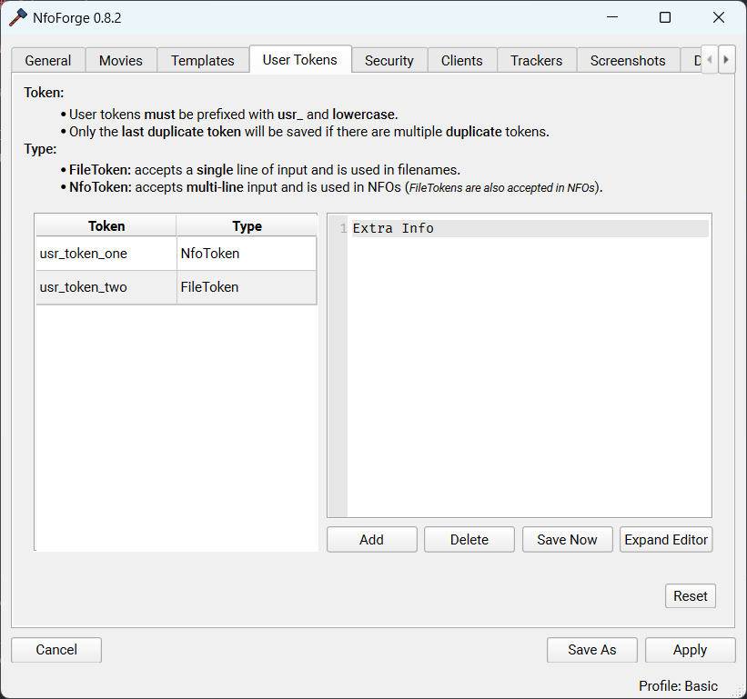
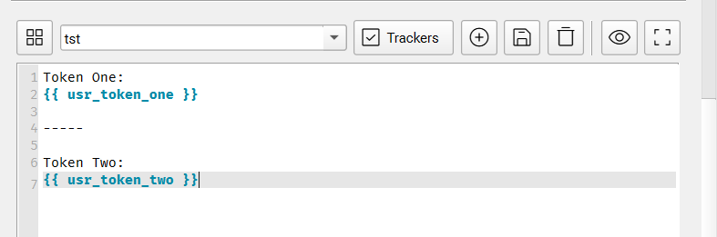
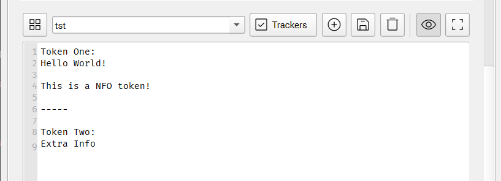
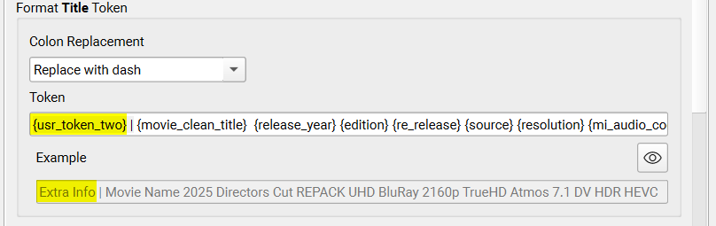

Advanced
We'll go over some advanced use cases.
User Tokens
In NfoForge, open Settings → User Tokens to manage user tokens.
Adding a User Token
To add a new token, select Add.
- Double click the cell in the Token column that you just created to modify the token name.
- Double click the cell in the Type column that you just created to select the desired token type.
What is the difference between FileTokens and NfoTokens?
FileTokens are used for file paths and are accessible everywhere file paths are needed.
NfoTokens are only available within NFO templates and cannot be used for file paths. NFOs, however, can use all FileTokens.
Below are two newly created tokens.
User NfoToken

User FileToken

Example Usage
Below is an NFO template using our two example tokens.

Output

Example of file path token.

Global Tokens
These tokens are meant to be used in NFO templates. Each global token is prefixed with nf_.
Token Objects
All token objects resets to empty on Start Over or wizard reset. These tokens are updated dynamically throughout the flow of the program. Having this data available can be very powerful for advanced users.
{{ nf_shared_data }}
This token gives the user access to the SharedPayload dataclass. The field dynamic_data is specifically designed for plugins and numerous other functions that get filled throughout the workflow.
@dataclass(slots=True)
class SharedPayload:
url_data: list[ImageUploadData] = field(default_factory=list)
selected_trackers: Sequence[TrackerSelection] | None = None
loaded_images: Sequence[Path] | None = None
generated_images: bool = False
is_comparison_images: bool = False
dynamic_data: dict[str, Any] = field(default_factory=dict)
release_notes: str | None = None
def reset(self) -> None:
self.url_data.clear()
self.selected_trackers = None
self.loaded_images = None
self.generated_images = False
self.is_comparison_images = False
self.dynamic_data.clear()
self.release_notes = None
{{ nf_media_search_payload }}
This token gives the user access to the MediaSearchPayload dataclass.
@dataclass(slots=True)
class MediaSearchPayload:
imdb_id: str | None = None
imdb_data: Movie | None = None
tmdb_id: str | None = None
tmdb_data: dict | None = None
tvdb_id: str | None = None
tvdb_data: dict | None = None
anilist_id: str | None = None
anilist_data: dict | None = None
mal_id: str | None = None
title: str | None = None
year: int | None = None
original_title: str | None = None
genres: list[TMDBGenreIDsMovies | TMDBGenreIDsSeries] = field(default_factory=list)
def reset(self) -> None:
self.imdb_id = None
self.imdb_data = None
self.tmdb_id = None
self.tmdb_data = None
self.tvdb_id = None
self.tvdb_data = None
self.anilist_id = None
self.anilist_data = None
self.mal_id = None
self.title = None
self.year = None
self.original_title = None
self.genres.clear()
{{ nf_media_input_payload }}
This token gives the user access to the MediaInputPayload dataclass.
@dataclass(slots=True)
class MediaInputPayload:
script_file: Path | None = None
source_file: Path | None = None
source_file_mi_obj: MediaInfo | None = None
encode_file: Path | None = None
encode_file_mi_obj: MediaInfo | None = None
encode_file_dir: Path | None = None
renamed_file: Path | None = None
working_dir: Path | None = None
def reset(self) -> None:
self.script_file = None
self.source_file = None
self.source_file_mi_obj = None
self.encode_file = None
self.encode_file_mi_obj = None
self.encode_file_dir = None
self.renamed_file = None
self.working_dir = None
Example Usage
Displaying the object directly in the template.
MediaInputPayload(script_file=None, source_file=None, source_file_mi_obj=None, encode_file=WindowsPath('C:/Users/user/Desktop/sample/example/Big.Buck.Bunny.2008.BluRay.1080p.MP2.2.0.x264.mp4'), encode_file_mi_obj=<pymediainfo.MediaInfo object at 0x00000210F6087B90>, encode_file_dir=None, renamed_file=None, working_dir=WindowsPath('C:/Users/user/AppData/Local/nfoforge/Big.Buck.Bunny.2008.BluRay_08.04.2025_02.21.24'))
You can use the object above in a template. This is a PyMediaInfo object utilizing the method to_data().
{% if nf_media_input_payload.encode_file_mi_obj %}
{{ nf_media_input_payload.encode_file_mi_obj.to_data() }}
{% endif %}
{
"tracks": [
{
"track_type": "General",
"count": "350",
"count_of_stream_of_this_kind": "1",
"kind_of_stream": "General",
"other_kind_of_stream": ["General"],
"stream_identifier": "0",
"count_of_video_streams": "1",
"count_of_audio_streams": "2",
"video_format_list": "AVC",
"video_format_withhint_list": "AVC",
"codecs_video": "AVC",
"audio_format_list": "MPEG Audio / AC-3",
"audio_format_withhint_list": "MPEG Audio / AC-3",
"audio_codecs": "MPEG Audio / AC-3",
"audio_channels_total": "8",
"complete_name": "C:\\Users\\user\\Desktop\\sample\\example\\Big.Buck.Bunny.2008.BluRay.1080p.MP2.2.0.x264.mp4",
"folder_name": "C:\\Users\\user\\Desktop\\sample\\example",
"file_name_extension": "Big.Buck.Bunny.2008.BluRay.1080p.MP2.2.0.x264.mp4",
"file_name": "Big.Buck.Bunny.2008.BluRay.1080p.MP2.2.0.x264",
"file_extension": "mp4",
"format": "MPEG-4",
"other_format": ["MPEG-4"],
"format_extensions_usually_used": "braw mov mp4 m4v m4a m4b m4p m4r 3ga 3gpa 3gpp 3gp 3gpp2 3g2 k3g jpm jpx mqv ismv isma ismt f4a f4b f4v",
"commercial_name": "MPEG-4",
"format_profile": "Base Media",
"internet_media_type": "video/mp4",
"codec_id": "isom",
"other_codec_id": ["isom (isom/avc1)"],
"codec_id_url": "http://www.apple.com/quicktime/download/standalone.html",
"codecid_compatible": "isom/avc1",
"file_size": 355040641,
"other_file_size": [
"339 MiB",
"339 MiB",
"339 MiB",
"339 MiB",
"338.6 MiB",
],
"duration": 634500,
"other_duration": [
"10 min 34 s",
"10 min 34 s 500 ms",
"10 min 34 s",
"00:10:34.500",
"00:10:34:15",
"00:10:34.500 (00:10:34:15)",
],
"overall_bit_rate": 4476478,
"other_overall_bit_rate": ["4 476 kb/s"],
"frame_rate": "30.000",
"other_frame_rate": ["30.000 FPS"],
"frame_count": "19035",
"stream_size": 236023,
"other_stream_size": [
"230 KiB (0%)",
"230 KiB",
"230 KiB",
"230 KiB",
"230.5 KiB",
"230 KiB (0%)",
],
"proportion_of_this_stream": "0.00066",
"headersize": "235477",
"datasize": "354805106",
"footersize": "58",
"isstreamable": "Yes",
"title": "Big Buck Bunny, Sunflower version",
"movie_name": "Big Buck Bunny, Sunflower version",
"performer": "Blender Foundation 2008, Janus Bager Kristensen 2013",
"composer": "Sacha Goedegebure",
"genre": "Animation",
"encoded_date": "2013-12-16 17:49:00 UTC",
"tagged_date": "2013-12-16 17:49:00 UTC",
"file_creation_date": "2025-07-30 22:09:03.199 UTC",
"file_creation_date__local": "2025-07-30 18:09:03.199",
"file_last_modification_date": "2013-12-17 17:49:05.000 UTC",
"file_last_modification_date__local": "2013-12-17 13:49:05.000",
"comment": "Creative Commons Attribution 3.0 - http://bbb3d.renderfarming.net",
"com": "Jan Morgenstern",
},
{
"track_type": "Video",
"count": "391",
"count_of_stream_of_this_kind": "1",
"kind_of_stream": "Video",
"other_kind_of_stream": ["Video"],
"stream_identifier": "0",
"streamorder": "0",
"track_id": 1,
"other_track_id": ["1"],
"format": "AVC",
"other_format": ["AVC"],
"format_info": "Advanced Video Codec",
"format_url": "http://developers.videolan.org/x264.html",
"commercial_name": "AVC",
"format_profile": "High@L4.2",
"format_settings": "CABAC / 4 Ref Frames",
"format_settings__cabac": "Yes",
"other_format_settings__cabac": ["Yes"],
"format_settings__reference_frames": 4,
"other_format_settings__reference_frames": ["4 frames"],
"internet_media_type": "video/H264",
"codec_id": "avc1",
"codec_id_info": "Advanced Video Coding",
"duration": 634500,
"other_duration": [
"10 min 34 s",
"10 min 34 s 500 ms",
"10 min 34 s",
"00:10:34.500",
"00:10:34:15",
"00:10:34.500 (00:10:34:15)",
],
"bit_rate": 4000000,
"other_bit_rate": ["4 000 kb/s"],
"maximum_bit_rate": 25957272,
"other_maximum_bit_rate": ["26.0 Mb/s"],
"width": 1920,
"other_width": ["1 920 pixels"],
"height": 1080,
"other_height": ["1 080 pixels"],
"stored_height": "1088",
"sampled_width": "1920",
"sampled_height": "1080",
"pixel_aspect_ratio": "1.000",
"display_aspect_ratio": "1.778",
"other_display_aspect_ratio": ["16:9"],
"rotation": "0.000",
"frame_rate_mode": "CFR",
"other_frame_rate_mode": ["Constant"],
"frame_rate": "30.000",
"other_frame_rate": ["30.000 FPS"],
"framerate_num": "30",
"framerate_den": "1",
"frame_count": "19035",
"color_space": "YUV",
"chroma_subsampling": "4:2:0",
"other_chroma_subsampling": ["4:2:0"],
"bit_depth": 8,
"other_bit_depth": ["8 bits"],
"scan_type": "Progressive",
"other_scan_type": ["Progressive"],
"bits__pixel_frame": "0.064",
"stream_size": 316755338,
"other_stream_size": [
"302 MiB (89%)",
"302 MiB",
"302 MiB",
"302 MiB",
"302.1 MiB",
"302 MiB (89%)",
],
"proportion_of_this_stream": "0.89217",
"writing_library": "x264 - core 115",
"other_writing_library": ["x264 core 115"],
"encoded_library_name": "x264",
"encoded_library_version": "core 115",
"encoding_settings": "cabac=1 / ref=4 / deblock=1:1:1 / analyse=0x3:0x133 / me=tesa / subme=10 / psy=1 / psy_rd=0.40:0.00 / mixed_ref=1 / me_range=24 / chroma_me=1 / trellis=2 / 8x8dct=1 / cqm=0 / deadzone=21,11 / fast_pskip=0 / chroma_qp_offset=-2 / threads=12 / sliced_threads=0 / nr=0 / decimate=1 / interlaced=0 / bluray_compat=0 / constrained_intra=0 / bframes=16 / b_pyramid=2 / b_adapt=2 / b_bias=0 / direct=3 / weightb=1 / open_gop=0 / weightp=2 / keyint=250 / keyint_min=25 / scenecut=40 / intra_refresh=0 / rc_lookahead=60 / rc=2pass / mbtree=1 / bitrate=4000 / ratetol=1.0 / qcomp=0.60 / qpmin=0 / qpmax=69 / qpstep=4 / cplxblur=20.0 / qblur=0.5 / ip_ratio=1.40 / aq=1:0.60",
"encoded_date": "2013-12-16 17:49:00 UTC",
"tagged_date": "2013-12-16 17:49:05 UTC",
"codec_configuration_box": "avcC",
},
{
"track_type": "Audio",
"count": "285",
"count_of_stream_of_this_kind": "2",
"kind_of_stream": "Audio",
"other_kind_of_stream": ["Audio"],
"stream_identifier": 0,
"other_stream_identifier": ["1"],
"streamorder": "1",
"track_id": 2,
"other_track_id": ["2"],
"format": "MPEG Audio",
"other_format": ["MPEG Audio"],
"commercial_name": "MPEG Audio",
"format_version": "Version 1",
"format_profile": "Layer 3",
"format_settings": "Joint stereo / MS Stereo",
"mode": "Joint stereo",
"mode_extension": "MS Stereo",
"internet_media_type": "audio/mpeg",
"codec_id": "mp4a-6B",
"duration": 634200,
"other_duration": [
"10 min 34 s",
"10 min 34 s 200 ms",
"10 min 34 s",
"00:10:34.200",
"00:10:34.200",
],
"bit_rate_mode": "CBR",
"other_bit_rate_mode": ["Constant"],
"bit_rate": 160000,
"other_bit_rate": ["160 kb/s"],
"maximum_bit_rate": 165120,
"other_maximum_bit_rate": ["165 kb/s"],
"channel_s": 2,
"other_channel_s": ["2 channels"],
"samples_per_frame": "1152",
"sampling_rate": 48000,
"other_sampling_rate": ["48.0 kHz"],
"samples_count": "30440448",
"frame_rate": "41.667",
"other_frame_rate": ["41.667 FPS (1152 SPF)"],
"frame_count": "26424",
"compression_mode": "Lossy",
"other_compression_mode": ["Lossy"],
"stream_size": 12683520,
"other_stream_size": [
"12.1 MiB (4%)",
"12 MiB",
"12 MiB",
"12.1 MiB",
"12.10 MiB",
"12.1 MiB (4%)",
],
"proportion_of_this_stream": "0.03572",
"writing_library": "LAME3.99r",
"other_writing_library": ["LAME3.99r"],
"encoding_settings": "-m j -V 4 -q 3 -lowpass 17.5 -b 160",
"encoded_date": "2013-12-16 17:49:04 UTC",
"tagged_date": "2013-12-16 17:49:05 UTC",
},
{
"track_type": "Audio",
"count": "301",
"count_of_stream_of_this_kind": "2",
"kind_of_stream": "Audio",
"other_kind_of_stream": ["Audio"],
"stream_identifier": 1,
"other_stream_identifier": ["2"],
"streamorder": "2",
"track_id": 3,
"other_track_id": ["3"],
"format": "AC-3",
"other_format": ["AC-3"],
"format_info": "Audio Coding 3",
"format_url": "https://en.wikipedia.org/wiki/AC3",
"commercial_name": "Dolby Digital",
"other_commercial_name": ["Dolby Digital"],
"format_settings__endianness": "Big",
"codec_id": "ac-3",
"duration": 634143,
"other_duration": [
"10 min 34 s",
"10 min 34 s 143 ms",
"10 min 34 s",
"00:10:34.143",
"00:10:34.143",
],
"bit_rate_mode": "CBR",
"other_bit_rate_mode": ["Constant"],
"bit_rate": 320000,
"other_bit_rate": ["320 kb/s"],
"channel_s": 6,
"other_channel_s": ["6 channels"],
"channel_positions": "Front: L C R, Side: L R, LFE",
"other_channel_positions": ["3/2/0.1"],
"channel_layout": "L R C LFE Ls Rs",
"samples_per_frame": "1536",
"sampling_rate": 48000,
"other_sampling_rate": ["48.0 kHz"],
"samples_count": "30438864",
"frame_rate": "31.250",
"other_frame_rate": ["31.250 FPS (1536 SPF)"],
"frame_count": "19817",
"compression_mode": "Lossy",
"other_compression_mode": ["Lossy"],
"stream_size": 25365760,
"other_stream_size": [
"24.2 MiB (7%)",
"24 MiB",
"24 MiB",
"24.2 MiB",
"24.19 MiB",
"24.2 MiB (7%)",
],
"proportion_of_this_stream": "0.07144",
"service_kind": "CM",
"other_service_kind": ["Complete Main"],
"encoded_date": "2013-12-16 17:49:05 UTC",
"tagged_date": "2013-12-16 17:49:05 UTC",
"bsid": "8",
"dialog_normalization": -31,
"other_dialog_normalization": ["-31 dB"],
"acmod": "7",
"lfeon": "1",
"cmixlev": "-4.5",
"other_cmixlev": ["-4.5 dB"],
"surmixlev": "-6 dB",
"other_surmixlev": ["-6 dB"],
"dialnorm_average": -31,
"other_dialnorm_average": ["-31 dB"],
"dialnorm_minimum": -31,
"other_dialnorm_minimum": ["-31 dB"],
"dialnorm_maximum": -31,
"other_dialnorm_maximum": ["-31 dB"],
"dialnorm_count": "32",
},
]
}
To display the duration of the loaded object, first check that the object exists. Then, set a variable named general_track to the first general track, and access the first value in its other_duration list: